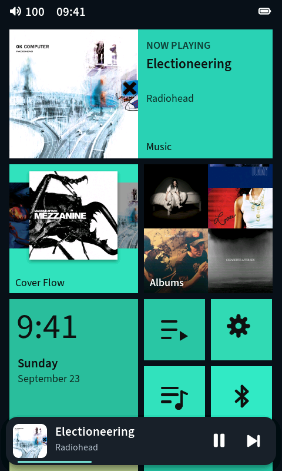
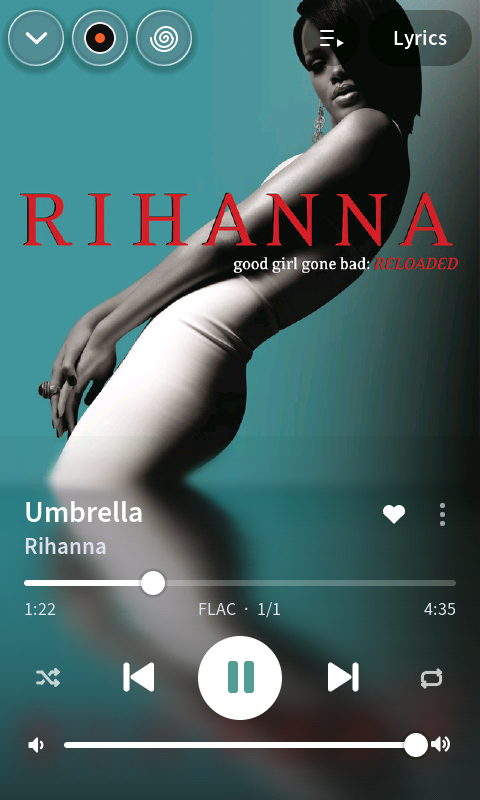
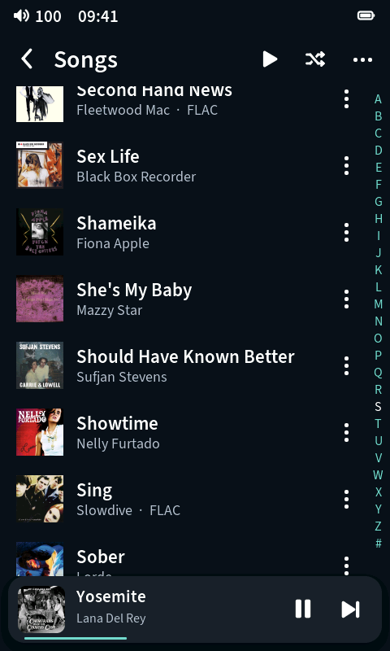
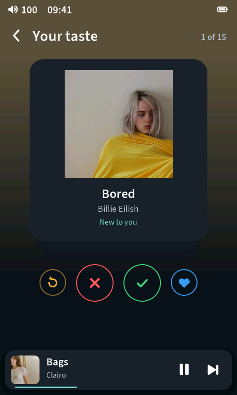
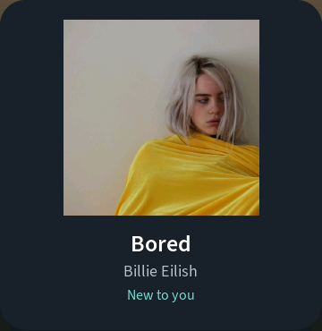
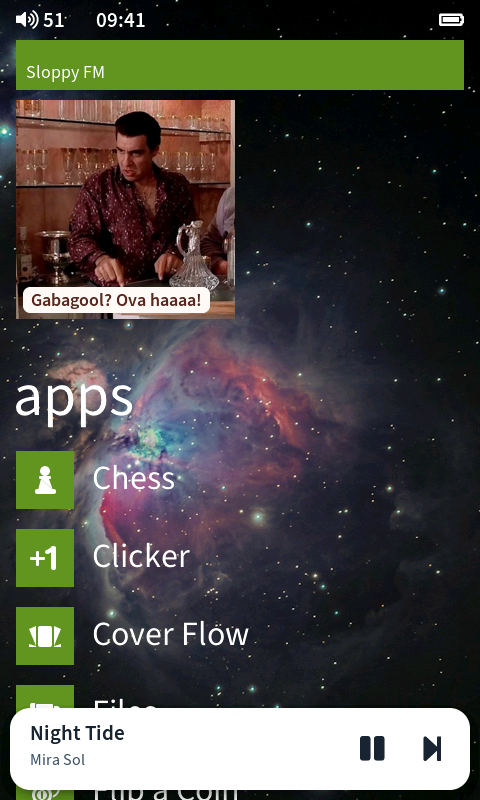

For the HiBy R1 · version 1.2
Your R1, the way it should have been.
gabagoolOS is new software for the HiBy R1. It’s fast, it’s pretty, and it’s full of things you’ll actually use. It runs from your SD card, so the original is always one button away.


Fast. Really fast.
Scroll through tens of thousands of songs without a stutter. Jump to any letter with the A to Z bar on the side.
And it sorts the way you’d expect: “The Beatles” sits with the Bs, and track 9 comes before track 10.

Make it yours.
Pick a home screen: colourful tiles, tidy cards or a simple list. Go light or dark, then choose any colour you like.
Flip through your albums with Cover Flow, and watch album pages take on the colours of their cover.
New in 1.1
It learns what you like.
Swipe through songs like a dating app. Keep the ones you love, skip the rest.
The more you swipe, the better it knows you. Then it makes you a mix: songs you loved, plus ones it thinks you will.


Sing along.
Lyrics light up line by line as the song plays, right over the album art.
They come from your own files, or gabagoolOS finds them for you over Wi-Fi.
Sounds the way you want.
Shape the sound with a real 10-band equalizer.
Or skip the fiddling: pick your headphones from a list and get a preset made for them, in one tap.
More than your music.
Thousands of radio stations. Any podcast. Audiobooks that remember exactly where you stopped, and e-books for when you’d rather read.
Got a music server at home? It plays from that too.
No cables needed.
Bluetooth headphones and speakers, AirPlay, and sending music from your computer over Wi-Fi.
Your phone even works as a remote. It pairs with a code, so only your phone can.
And a little fun.
2048, Sudoku, Snake, chess, a tiny pet to look after, a music quiz, and even Game Boy and Doom.
Not your thing? Hide them all with one tap. They never run unless you open them.
The house special
Gabagool? Ova haaaa!
Every home screen comes with one tile you didn’t order. Tap it. You’ll see.
Not in the mood? Hide it like any other tile. Nobody’s offended. Much.

Worry-free.
- Your music is safe. gabagoolOS lives on your SD card and never changes your files.
- The original is one button away. Hold Volume Down when you turn the R1 on.
- No tracking. No accounts, no ads, nothing sent anywhere unless you ask for it.
Install it in about ten minutes.
Download
Get the gabagoolOS zip and the boot menu file (
.upt) from the latest release.Copy them to your card
Unzip the zip onto your card. Put the
.uptfile there too, and rename itr1.upt.Press install
On the R1, go to System > Firmware update > Via SD card. That’s it! From now on it updates itself over Wi-Fi.
Back up your card first, just in case. Stuck? The release has a longer guide. Changed your mind later? Going back is easy.
Questions
Is this Rockbox?
Under the hood, yes. Rockbox has played music on all kinds of players for over twenty years, and it still handles the playback. gabagoolOS is the new touch interface on top, made for the R1.
Was AI used to help build this?
Yes. We test it a lot: every screen, in every language and text size, plus thousands of random taps hunting for crashes. And the code is open for anyone to read.
How do I go back to the original?
Copy HiBy’s own firmware to your card as r1.upt, hold Volume Down while you turn the R1 on, and run the update from the HiBy menu. Delete the .rockbox folder if you want the space back. No hard feelings.
My R1 is brand new. Will Wi-Fi work?
The newest R1s have a different Wi-Fi chip we haven’t tried yet. It should work, and music plays either way, but please tell us how it goes!
Why “gabagool”?
It’s how they say “capicola” in The Sopranos. Tap the house special and you’ll get it.
What about other players?
Just the R1 for now. Everything is made for its screen and buttons.
Something went wrong. What now?
Sorry about that! Tell us on GitHub, and attach the log file from your card (.rockbox/sloppy/sloppy.log). It helps a lot.